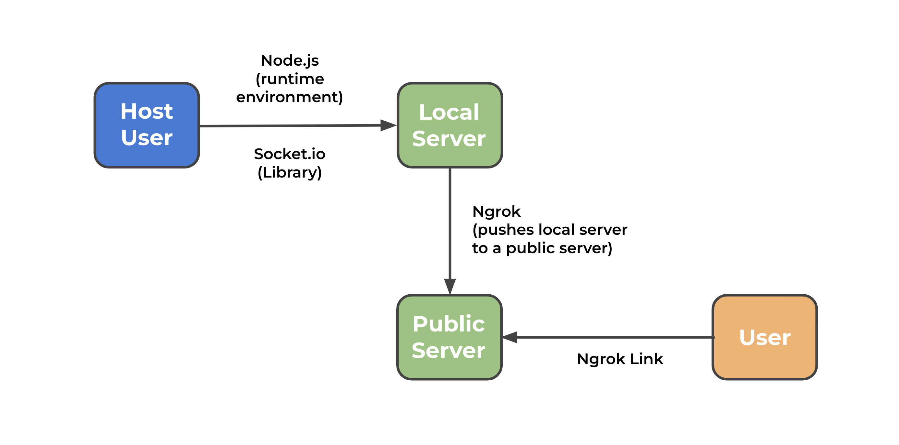
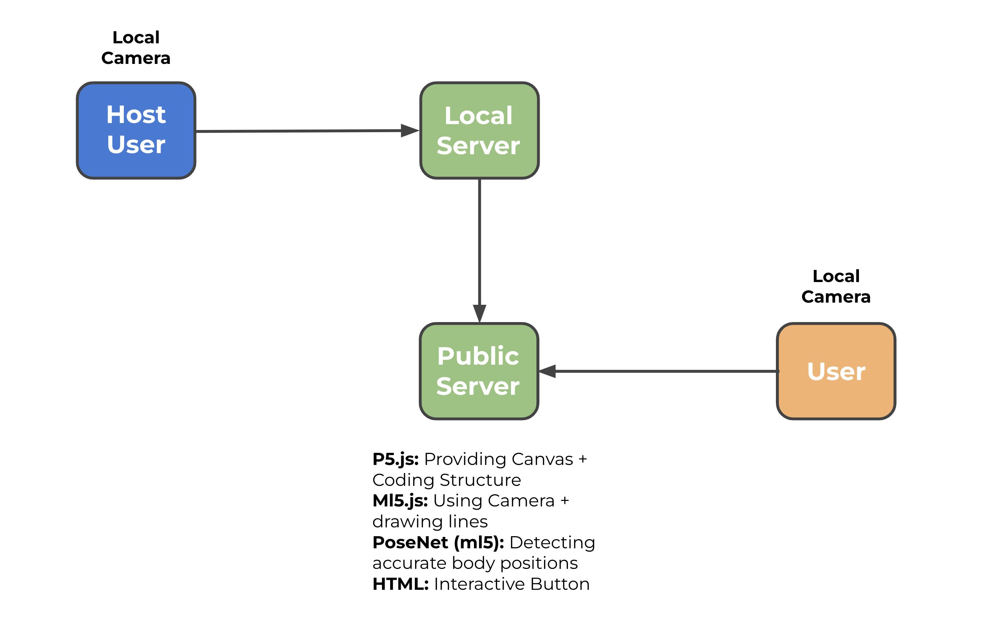
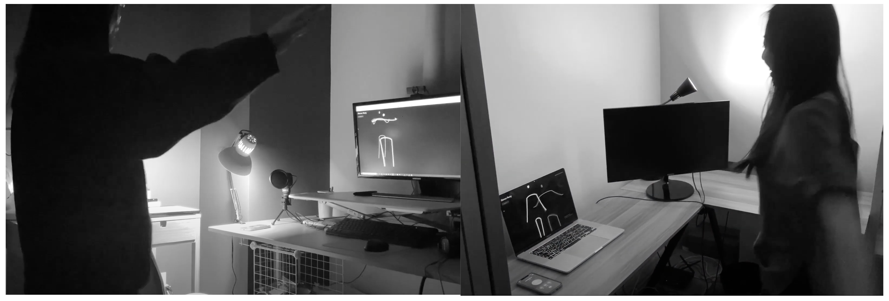
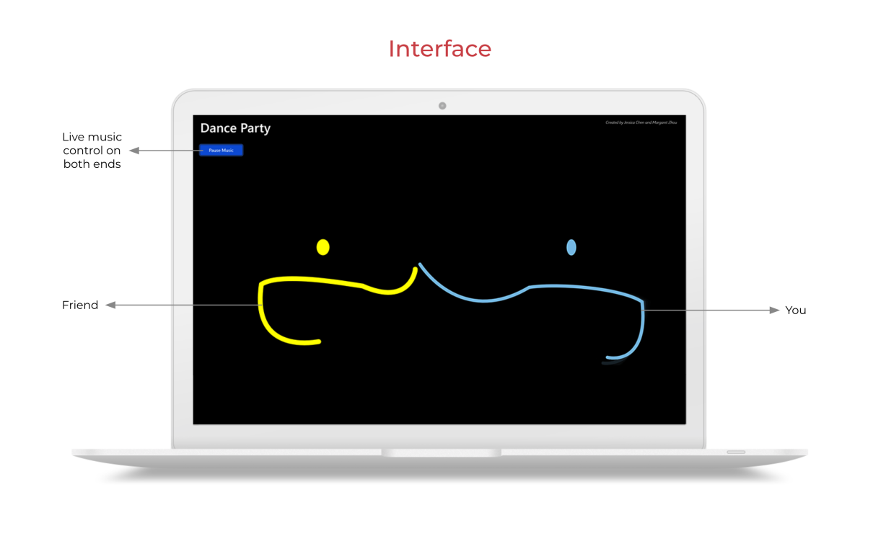

Can we use ML to facilitate remote human communication?
Bo-t Language
Team:
Myself, Jessica Chen
Timeline:
2 Weeks
My Role:
Design and Engineering
Problem Space
During the pandemic, Jessica and I were in our rooms meeting over zoom almost everyday. At
some point while brainstorming for projects, Jessica mentioned that it could be fun to build
a dance party room - and that is what we did.
We wanted to build something that encouraged freedom of dance expression in a remote
setting, without the intimidation of being on camera. A platform for being present with
someone, sharing a moment - sharing a dance.

How it works
xxx
xxx




Webcam Interaction
xxx

Interface
xxx

Bo-t Language
xxx